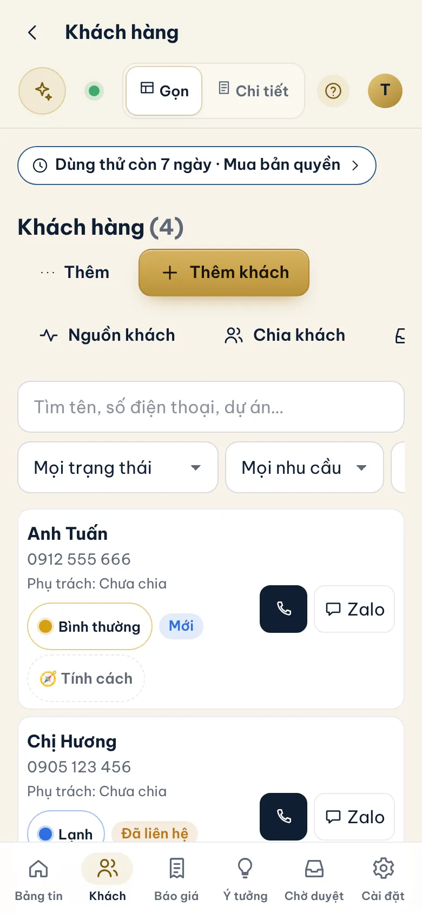
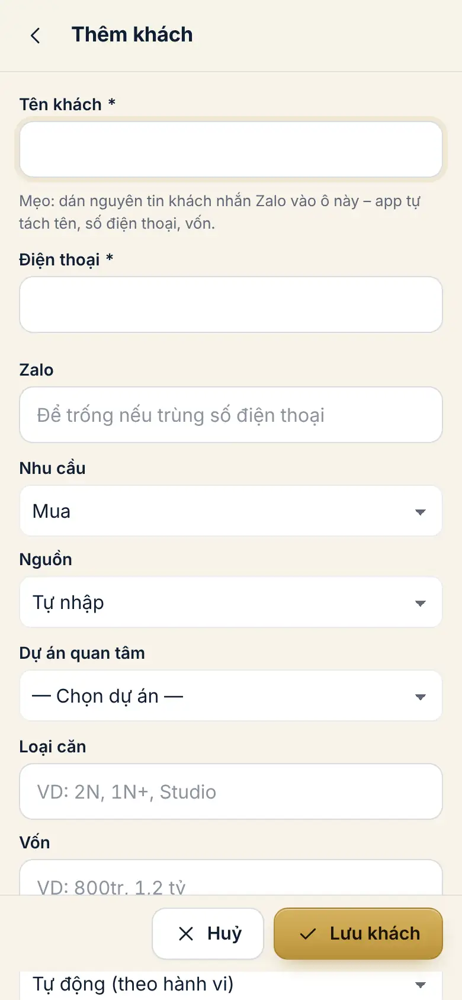
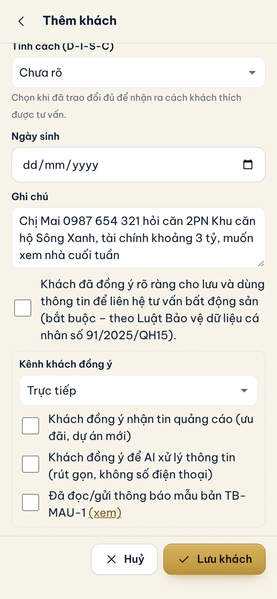
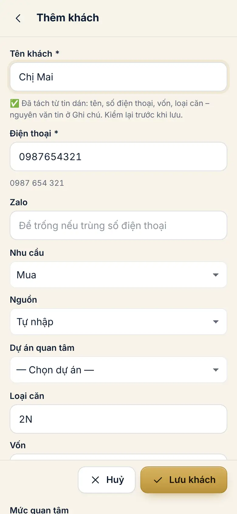
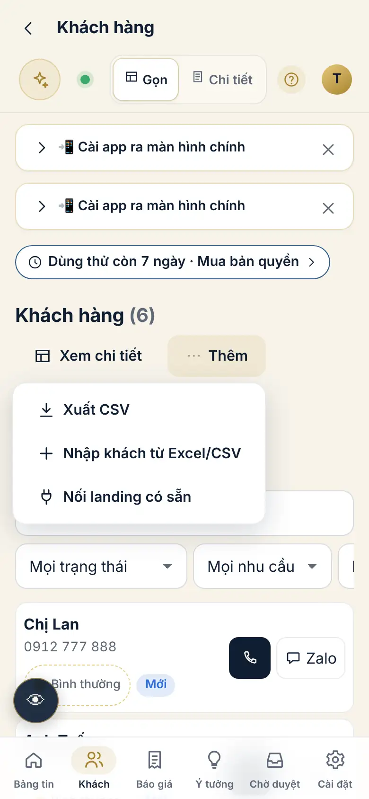
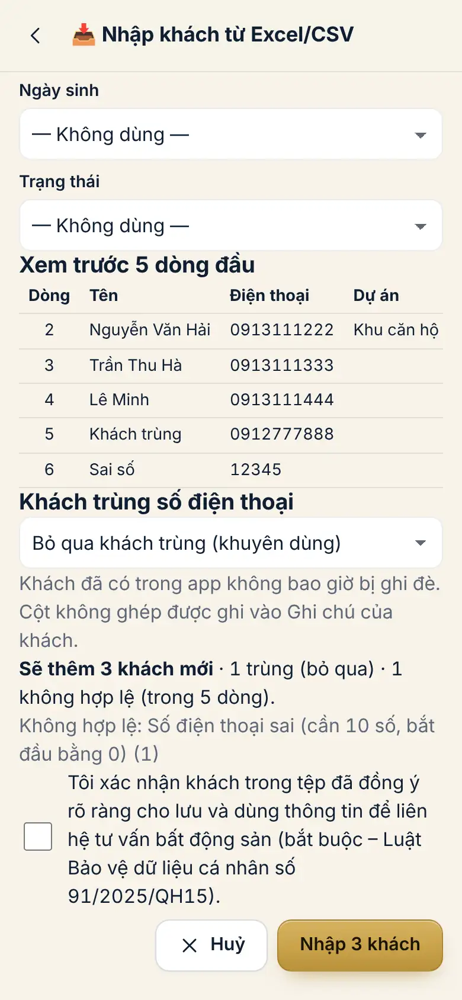
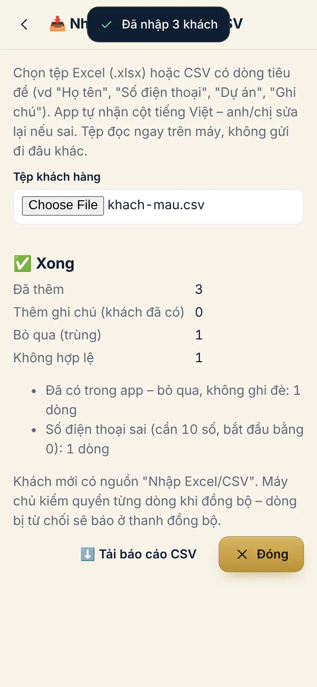

Thêm khách
Có 3 cách: gõ tay, dán nguyên tin Zalo của khách, hoặc nhập cả danh sách từ Excel.
Mọi cách đều cần khách đã đồng ý cho lưu thông tin (Luật Bảo vệ dữ liệu cá nhân số 91/2025/QH15).
Cách 1. Gõ tay
- Bấm Khách ở thanh dưới, chọn thẻ 👥 Khách hàng.
- Bấm + Thêm khách.

- Gõ Tên khách và Điện thoại (bắt buộc). Số điện thoại phải đủ 10 số, bắt đầu bằng 0.
- Điền thêm nếu có: Nhu cầu, Nguồn, Dự án quan tâm, Loại căn, Vốn, Ghi chú.

- Kéo xuống cuối, tick ô Khách đã đồng ý rõ ràng cho lưu và dùng thông tin….

- Bấm ✓ Lưu khách. Hồ sơ khách mở ra.

Số đã có trong danh sách: app báo "Số điện thoại đã có trong danh sách khách" kèm link Mở hồ sơ đó, không tạo khách thứ hai.
Cách 2. Dán tin Zalo
- Trong Zalo, giữ tay vào tin khách nhắn, chọn Sao chép.
- Mở + Thêm khách như cách 1.
- Giữ tay vào ô Tên khách, chọn Dán.
- App tự tách tên, số điện thoại, vốn, loại căn. Nguyên văn tin nằm ở Ghi chú.
Dòng xanh ✅ Đã tách từ tin dán… cho biết đã tách được gì.

- Kiểm lại tên. Tin mở đầu bằng lời chào (vd "Chào em, anh là…") có thể làm ô Tên khách trống hoặc sai. Gõ lại cho đúng.
- Tick ô đồng ý, bấm ✓ Lưu khách.
Tách tốt nhất khi tin có dạng "Chị Mai 0987 654 321 hỏi căn 2PN…" hoặc "Tên: … / SĐT: …".
Tên dự án trong tin chưa được tự chọn – chọn ở ô Dự án quan tâm nếu cần.
Cách 3. Nhập từ Excel / CSV
Tệp cần có dòng tiêu đề, ví dụ: Họ tên, Số điện thoại, Dự án, Ghi chú. Nhận .xlsx, .csv, .tsv, .txt. Tệp được đọc ngay trên máy, không gửi đi nơi khác.
- Ở danh sách khách, bấm ⋯ Thêm → Nhập khách từ Excel/CSV.

- Chọn tệp.
- Kiểm phần Ghép cột: app tự nhận cột tiếng Việt. Sửa nếu ghép sai.
- Xem Xem trước 5 dòng đầu.
- Chọn cách xử lý Khách trùng số điện thoại (khuyên dùng Bỏ qua khách trùng).
- Đọc dòng đếm: số khách mới, số trùng, số không hợp lệ.
- Tick ô Tôi xác nhận khách trong tệp đã đồng ý….
- Bấm Nhập … khách.

- Màn ✅ Xong báo số đã thêm, bỏ qua, không hợp lệ. Muốn biết dòng nào bị bỏ: bấm ⬇️ Tải báo cáo CSV.

Khách đã có trong app không bao giờ bị ghi đè. Khách nhập vào có nguồn "Nhập Excel/CSV". Chưa có tệp? Bấm Tải tệp mẫu (Excel) trong hộp nhập: tệp có sẵn đúng cột, cột số điện thoại giữ số 0 đầu, kèm trang Hướng dẫn. Tick xác nhận đồng ý khi nhập được ghi vào Nhật ký đồng ý của từng khách (kênh "Nhập từ danh sách cũ").
Nguồn khách – nguồn nào ra khách
- Khi thêm/sửa khách: chọn Nguồn (TikTok/Reels, Bài Facebook, Landing, Giới thiệu, Người quen, Zalo…) và ghi Chi tiết nguồn (tên bài đăng, clip, chiến dịch) – có gợi ý chọn nhanh các chi tiết đã dùng.
- Bấm Nguồn khách ở danh sách: xem theo tuần/tháng mỗi nguồn ra bao nhiêu khách mới, khách Nóng, đã hẹn xem, đã chốt, kèm khuyến nghị; bấm Xuất CSV (chỉ số gộp, không có tên/số khách).
Dán tin khách
Bấm Dán tin khách (Chủ/Quản lý): dán tin Zalo/Messenger/bình luận, app nhận ra tên, số điện thoại, dự án, ý định và gợi ý phương án trả lời mẫu – tạo khách/lịch hẹn/ghi chú một chạm. Anh/chị chép phương án rồi tự gửi – app không tự gửi cho khách.
Đồng ý dữ liệu cá nhân
- Hồ sơ khách có Nhật ký đồng ý: ghi khách đồng ý gì (lưu dữ liệu, nhận tin chăm sóc, tin quảng cáo, để AI xử lý), qua kênh nào, ai ghi, lúc nào; khách rút lại thì bấm ghi rút lại.
- Khách để lại số trên landing, Trang của tôi, form nối landing có sẵn hoặc Sheet landing (có ô tick đồng ý) tự có 1 dòng nhật ký kênh Form landing, ghi giờ khách gửi. Nhập khách vào Kho lead phải tick ô xác nhận khách đã đồng ý – nhật ký ghi tên người xác nhận. Form ngoài không có ô đồng ý: khách vẫn vào app nhưng ở trạng thái Chưa có đồng ý – hỏi lại khách rồi ghi đồng ý trong hồ sơ.
- Khách đã rút lại: app khoá soạn tin, ẩn nhắc gọi/chăm sóc và không gửi thông tin khách cho AI. Khách chưa đồng ý cho AI: các nút AI tự ẩn.
- Menu ⋯ Thêm › Đồng ý dữ liệu: lọc khách chưa có đồng ý rõ ràng, sửa văn bản thông báo mẫu, xuất CSV nhật ký. Văn bản mẫu chỉ để tham khảo – anh/chị tự kiểm với quy định hiện hành.
← Mục lục · Tiếp: Gọi & nhắn Zalo